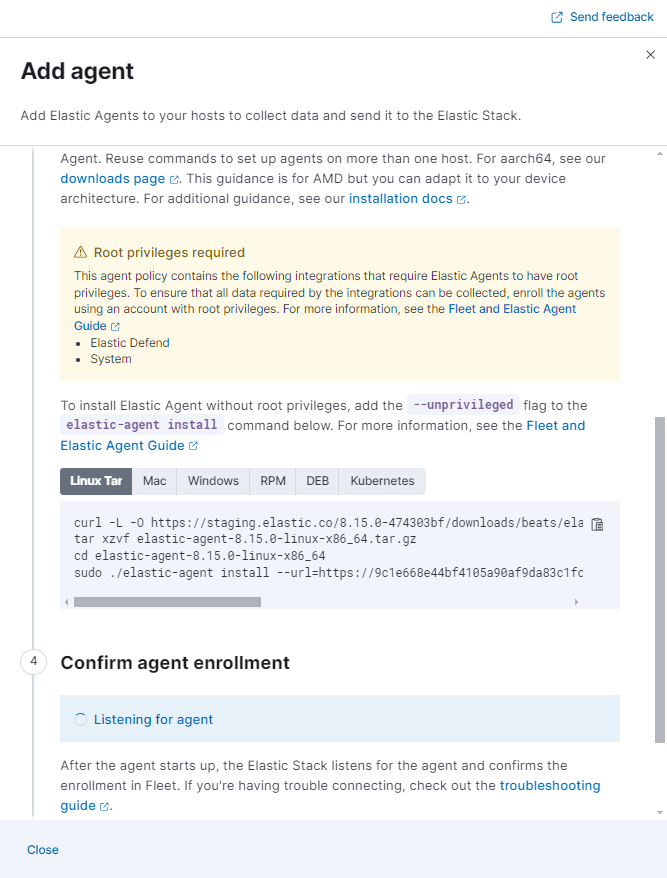

Install Fleet-managed Elastic Agentsedit
Where to startedit
To get up and running quickly, read one of our end-to-end guides:
- New to Elastic? Read our solution Getting started guides.
- Want to add data to an existing cluster or deployment? Read our Quick starts.
Looking for upgrade info? Refer to Upgrade Elastic Agents.
Just want to learn how to install Elastic Agent? Continue reading this page.
Prerequisitesedit
You will always need:
-
A Kibana user with
Allprivileges on Fleet and Integrations. Since many Integrations assets are shared across spaces, users need the Kibana privileges in all spaces. - Fleet Server running in a location accessible to Elastic Agent. Elastic Agent must have a direct network connection to Fleet Server and Elasticsearch. If you’re using our hosted Elasticsearch Service on Elastic Cloud, Fleet Server is already available as part of the Integrations Server. For self-managed deployments, refer to Add a Fleet Server.
-
Internet connection for Kibana to download integration packages from the Elastic Package Registry.
Make sure the Kibana server can connect to
https://epr.elastic.coon port443. If your environment has network traffic restrictions, there are ways to work around this requirement. See Air-gapped environments for more information.
If you are using a Fleet Server that uses your organization’s certificate, you will also need:
- A Certificate Authority (CA) certificate to configure Transport Layer Security (TLS) to encrypt traffic. If your organization already uses the Elastic Stack, you may already have a CA certificate. If you do not have a CA certificate, you can read more about generating one in Configure SSL/TLS for self-managed Fleet Servers.
If you’re running Elastic Agent 7.9 or earlier, stop the agent and manually remove it from your host.
Installation stepsedit
You can install only a single Elastic Agent per host.
Elastic Agent can monitor the host where it’s deployed, and it can collect and forward data from remote services and hardware where direct deployment is not possible.
To install an Elastic Agent and enroll it in Fleet:
- In Kibana, go to Fleet > Agents, and click Add agent.
-
In the Add agent flyout, select an existing agent policy or create a new one. If you create a new policy, Fleet generates a new Fleet enrollment token.
For on-premises deployments, you can dedicate a policy to all the agents in the network boundary and configure that policy to include a specific Fleet Server (or a cluster of Fleet Servers).
Read more in Add a Fleet Server to a policy.
- Make sure Enroll in Fleet is selected.
-
Download, install, and enroll the Elastic Agent on your host by selecting your host operating system and following the Install Elastic Agent on your host step.
-
If you are enrolling the agent in a Fleet Server that uses your organization’s certificate you must add the
--certificate-authoritiesoption to the command provided in the in-product instructions. If you do not include the certificate, you will see the following error: "x509: certificate signed by unknown authority".
-
After about a minute, the agent will enroll in Fleet, download the configuration specified in the agent policy, and start collecting data.
Notes:
-
If you encounter an "x509: certificate signed by unknown authority" error, you
might be trying to enroll in a Fleet Server that uses self-signed certs. To
fix this problem in a non-production environment, pass the
--insecureflag. For more information, refer to the troubleshooting guide. -
Optionally, you can use the
--tagflag to specify a comma-separated list of tags to apply to the enrolled Elastic Agent. For more information, refer to Filter list of Agents by tags. - Refer to Installation layout for the location of installed Elastic Agent files.
- Because Elastic Agent is installed as an auto-starting service, it will restart automatically if the system is rebooted.
To confirm that Elastic Agent is installed and running, go to the Agents tab in Fleet.
If the status hangs at Enrolling, make sure the elastic-agent process
is running.
If you run into problems:
- Check the Elastic Agent logs. If you use the default policy, agent logs and metrics are collected automatically unless you change the default settings. For more information, refer to Monitor Elastic Agent in Fleet.
- Refer to the troubleshooting guide.
For information about managing Elastic Agent in Fleet, refer to Centrally manage Elastic Agents in Fleet.